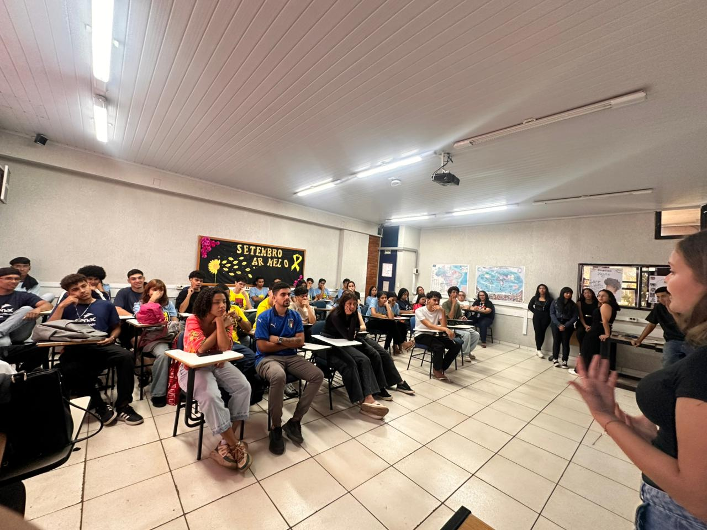
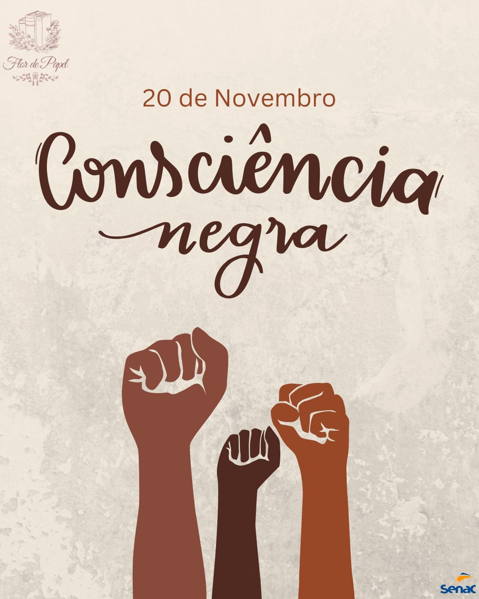

Vozes Negras na Literatura
Palavras que ecoam igualdade, identidade e potência.
O projeto Vozes Negras na Literatura foi criado para celebrar e amplificar narrativas negras na literatura, reconhecendo seu papel essencial na construção cultural e social.
Durante o mês da Consciência Negra, promovemos reflexões sobre ancestralidade, resistência e pertencimento por meio de obras e autores que transformam a história com suas palavras.
Autoras como a força poética de :contentReference[oaicite:0]{index=0}, a profundidade narrativa de :contentReference[oaicite:1]{index=1} e o retrato social de :contentReference[oaicite:2]{index=2}, junto ao ativismo artístico de :contentReference[oaicite:3]{index=3}, reforçam que a literatura negra é memória viva, luta e futuro.
Porque cada voz ouvida é um passo em direção à igualdade e à diversidade que a literatura — e o mundo — precisam.

Galeria do Projeto
Alguns registros das atividades, exposições e produções realizadas durante o projeto.



